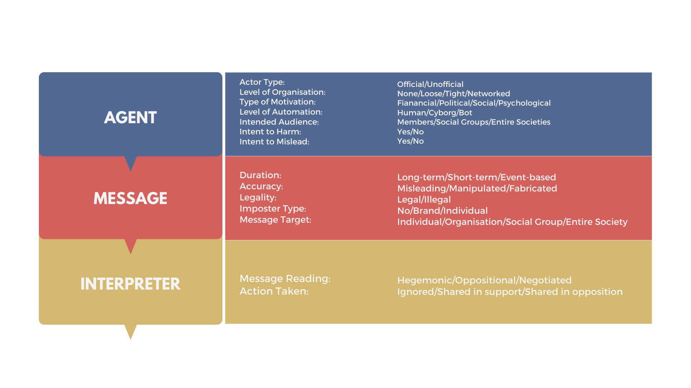
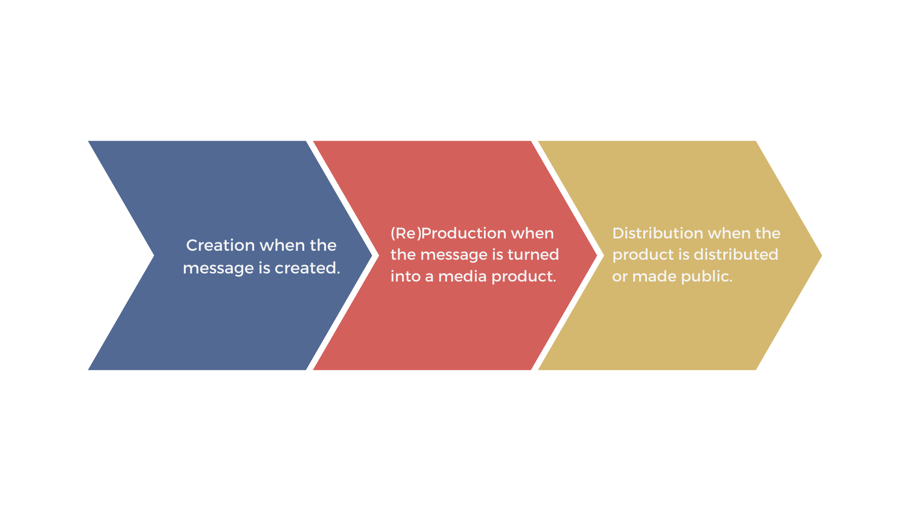
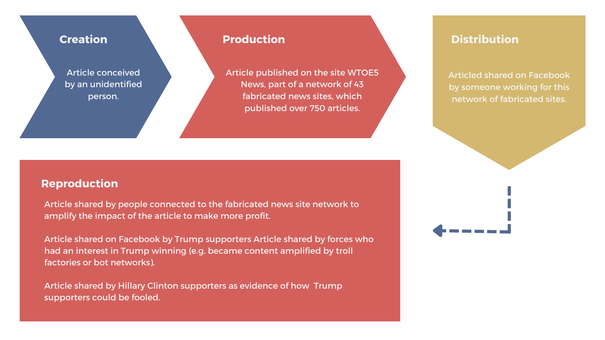

The term “fake news” is inherently vulnerable to being politicized and deployed as a weapon against the news industry, as a way of undermining reporting that people in power do not like. Thus it is recommended to use the terms misinformation, disinformation and malinformation which falls under the spectrum of ‘information disorder’.
Information disorder can undermine citizens' beliefs and trust in facts, science and rationality and stoke cynicism about online information that conflicts their opinions.
Using the dimensions of harm and falseness, we describe the differences between these three types of information:.
Disinformation is content that is intentionally false and designed to cause harm. It is motivated by three distinct factors: to make money; to have political influence, either foreign or domestic; or to cause trouble for the sake of it.
Misinformation also describes false content but the person sharing doesn't realize that it is false or misleading.
Malinformation describes genuine information that is shared with an intent to cause harm.
SOURCE: INFORMATION DISORDER: Toward an interdisciplinary framework for research and policy making.
Figure 1: ‘Information disorder’
there is also elements of information disorder. In this matrix are the questions that need
to be asked of each element: SOURCE: INFORMATION DISORDER: Toward an interdisciplinary framework for research and policy making.
Figure 2. Three elements of ‘information disorder’ SOURCE: INFORMATION DISORDER: Toward an interdisciplinary framework for research and policy making.
Figure 3. Phases of Information Disorder The example of the site that published a viral story that the Pope endorsed presidential candidate Donald Trump is one of the most famous. It is a useful case study for thinking about the different phases of ‘information disorder. SOURCE: INFORMATION DISORDER: Toward an interdisciplinary framework for research and policy making.
Figure 4. Application: Phases of information disorder

Three phases of Information Disorder:

Here is the example that shows the phases of information disorder.
